Tema gratis untuk Open Journal Systems
Jurnal ilmiah modern, tanpa menyentuh kode
Paideia Theme adalah tema untuk OJS 3.4 dan 3.5 dengan halaman artikel ala jurnal terindeks, teks lengkap HTML di dalam halaman, publikasi berkelanjutan, blok pengindeksan, dan metadata untuk mesin pencari. Dipasang seperti plugin lain dan diatur dari dasbor OJS.
- OJS 3.4 · 3.5
- Lisensi GPL v3
- Spanyol, Inggris, Portugis, dan Indonesia
- Mode gelap dan seluler
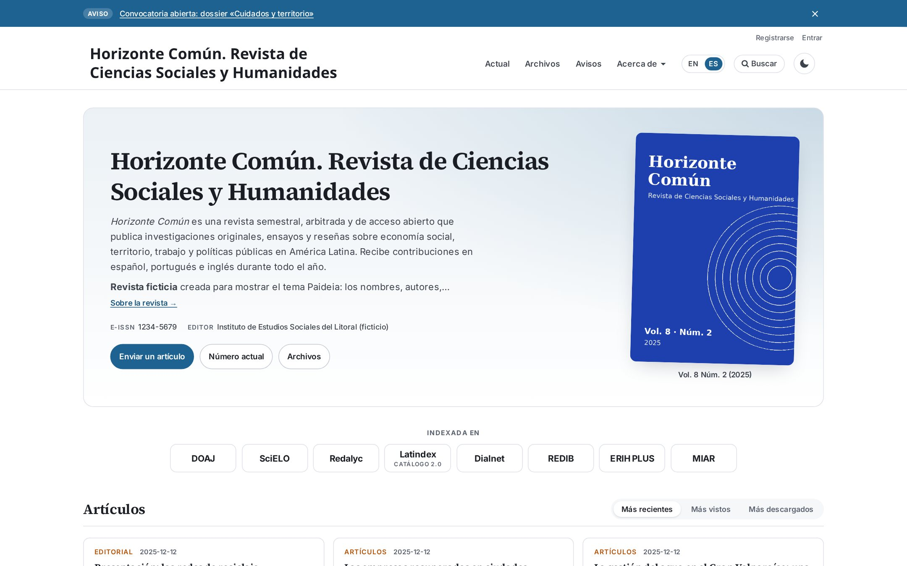
Fitur
Yang diharapkan pembaca dan pengindeks
Paideia dibangun di atas tema Default OJS dan merancang ulang halaman-halaman terpenting. Semuanya dapat diaktifkan atau dimatikan di opsi tema.
Halaman artikel
Bagian, akses terbuka, lisensi, penulis dengan ORCID dan afiliasi, tanggal, DOI yang bisa disalin, abstrak per bahasa, daftar isi samping, dan panel metrik.
Teks lengkap HTML
Galai HTML dibaca di dalam halaman, dengan gambar yang bisa diperbesar, tabel yang bisa digulir, dan pratinjau referensi.
Cara mengutip
Jendela dengan format dari plugin Citation Style Language, tombol salin, dan unduhan RIS serta BibTeX.
Publikasi berkelanjutan
Beranda menampilkan terbitan yang sedang berjalan, artikel terbaru lebih dulu, serta terbitan terakhir yang sudah ditutup.
Terindeks di
15 pengindeks siap diaktifkan dengan satu kotak centang (Scopus, WoS, DOAJ, SciELO, Redalyc, Latindex…) dan logo sendiri.
SEO
JSON-LD, Open Graph, tautan kanonis, dan URL teks lengkap untuk Google Scholar.
Dikutip oleh dan terkait
Sitasi dari OpenAlex dan artikel terkait berdasarkan kata kunci, tanpa indeks pencarian atau plugin yang lambat.
Pengumuman dan cookie
Pengumuman dalam kartu, bilah opsional dengan pengumuman terbaru, dan pemberitahuan cookie dengan teks yang dapat diubah.
Aksesibel dan ringan
Font lokal, tanpa skrip pihak ketiga, navigasi papan ketik, mode gelap, seluler, dan cetak.
Pemasangan
Dalam lima menit
- Unduh
paideia-x.y.z.w.tar.gzdari halaman rilis. Jangan diekstrak. - Di OJS buka Pengaturan → Situs Web → Plugin dan gunakan Unggah plugin baru.
- Di Pengaturan → Situs Web → Tampilan → Tema pilih Paideia lalu simpan.
Untuk memasang lewat terminal: salin folder ke plugins/themes/paideia (namanya harus paideia) lalu jalankan php lib/pkp/tools/installPluginVersion.php plugins/themes/paideia/version.xml.
Untuk memperbarui, unggah paket baru dengan cara yang sama: OJS mengenalinya sebagai versi yang lebih baru dan mempertahankan pengaturan.
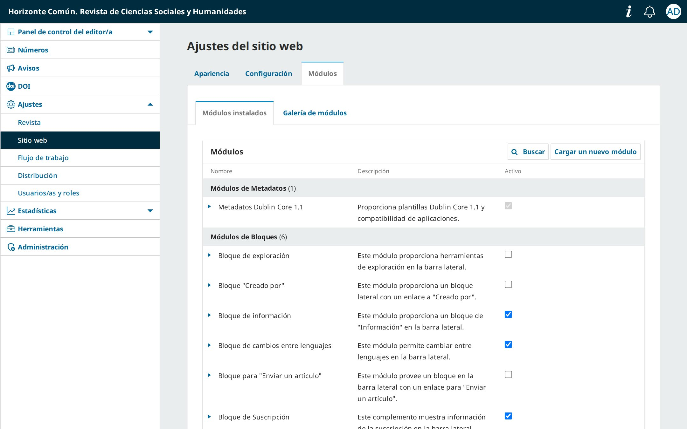
Pengaturan
Semua dari Tampilan → Tema
Setiap opsi memiliki deskripsi singkat. Opsi yang perlu penjelasan lebih menampilkan ikon lampu: arahkan tetikus untuk membacanya. Opsi yang bergantung pada opsi lain hanya muncul jika opsi tersebut aktif.
Desain dan beranda
- Warna utama: kepala halaman, tombol, tautan, dan tab.
- Tipografi: serif dan sans serif, hanya sans serif, atau font sistem.
- Beranda: terbitan terkini dengan daftar isinya, atau publikasi berkelanjutan.
- Tab paling banyak dilihat dan diunduh, serta bilah pengumuman.
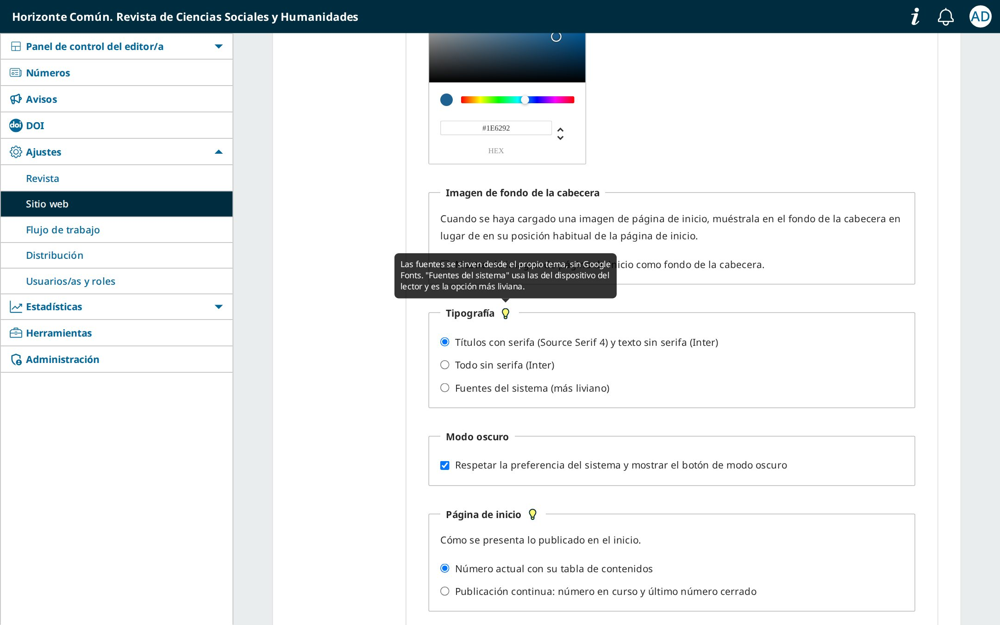
Pengindeksan
- Centang pengindeks tempat jurnal terdaftar; setelah dicentang, muncul kolom tautan ke profilnya dan opsi unggah logo. Logo otomatis disesuaikan dengan ubin; tanpa logo, nama yang ditampilkan.
- Untuk pengindeks lain, tambahkan logo dan tautan di Pengindeks lain.
- Pilih apakah blok berada di atas beranda atau di bawah setiap halaman.
Disarankan memakai opsi ini, bukan blok khusus di bilah samping: tema mengurus desain dan logo tetap sejajar.
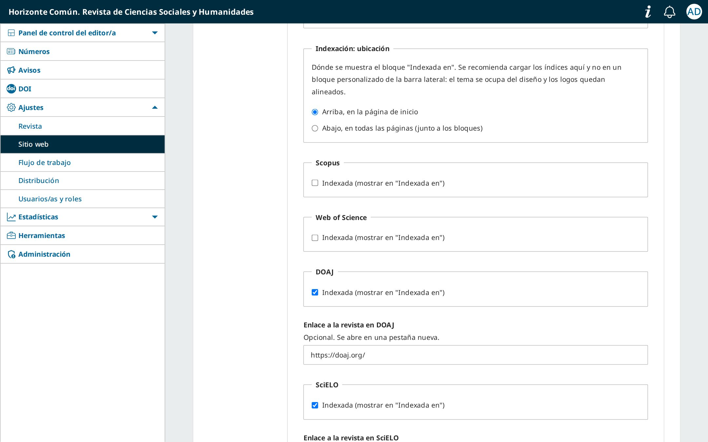
Artikel
- Teks lengkap HTML di dalam halaman dan gayanya (tipografi tema atau milik galai).
- Bagian galai (lanjutan): untuk melewati judul yang diulang oleh galai.
- Metrik, Dikutip oleh, artikel terkait, Crossmark, dan metadata SEO.
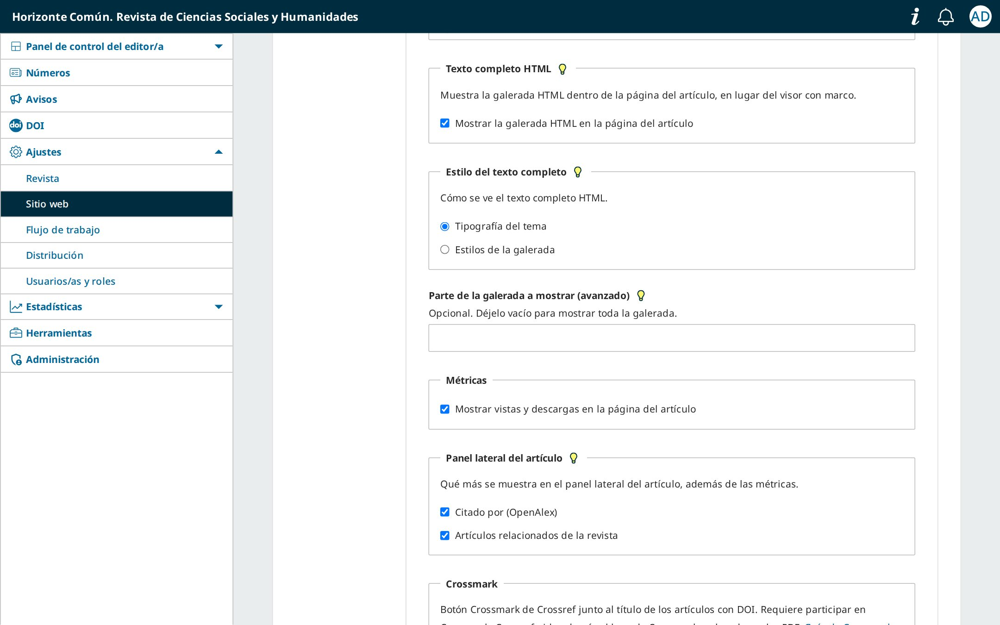
| Opsi | Fungsi | Bawaan |
|---|---|---|
| Warna utama | Kepala halaman, tombol, tautan, dan tab | Biru |
| Tipografi | Source Serif 4 + Inter, hanya Inter, atau font sistem | Serif + sans serif |
| Mode gelap | Mengikuti preferensi sistem dan menampilkan tombol | Aktif |
| Beranda | Terbitan terkini atau publikasi berkelanjutan | Terbitan terkini |
| Tab artikel | Paling banyak dilihat dan diunduh (12 bulan terakhir) | Aktif |
| Bilah pengumuman | Pengumuman terbaru di atas kepala halaman | Nonaktif |
| Pengindeksan | Pengindeks bawaan, logo sendiri, dan posisi | Atas beranda |
| Teks lengkap HTML | Galai HTML di dalam halaman artikel | Aktif |
| Panel samping | Dikutip oleh (OpenAlex) dan artikel terkait | Keduanya |
| Crossmark | Tombol Crossref di samping judul | Nonaktif |
| Kaki halaman | 2, 3, atau 4 kolom dan kolom berisi data jurnal | 3 kolom |
| Pemberitahuan cookie | Pemberitahuan dengan tautan privasi dan teks yang dapat diubah | Nonaktif |
Tur
Tampilannya
Tangkapan layar berasal dari jurnal uji. Untuk menjelajahi antarmuka sebenarnya, dengan OJS 3.5: buka jurnal demo →
Tangkapan layar menampilkan antarmuka berbahasa Spanyol; tema mengikuti bahasa yang dipilih pembaca.
Beranda
Bagian utama dengan deskripsi, ISSN, penerbit, dan sampul terbitan. Di bawahnya, blok Terindeks di dan tab artikel: terbaru, paling banyak dilihat, dan paling banyak diunduh.
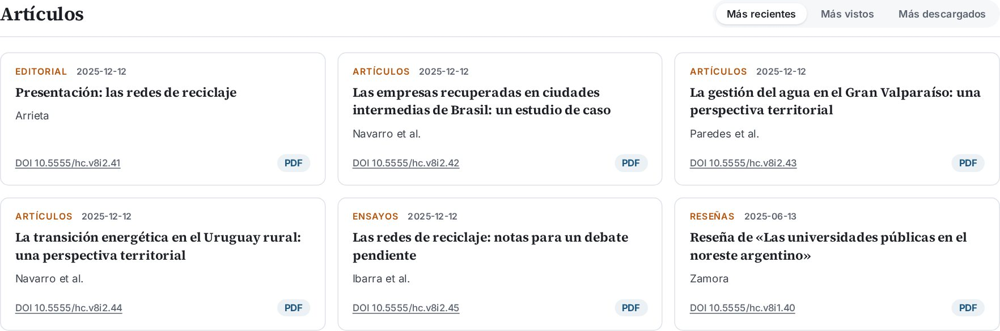
Publikasi berkelanjutan
Terbitan terkini ditampilkan sebagai terbitan berjalan: artikel diterbitkan begitu siap, dari yang terbaru, sampai terbitan berikutnya diterbitkan. Di sampingnya tampil terbitan terakhir yang sudah ditutup.
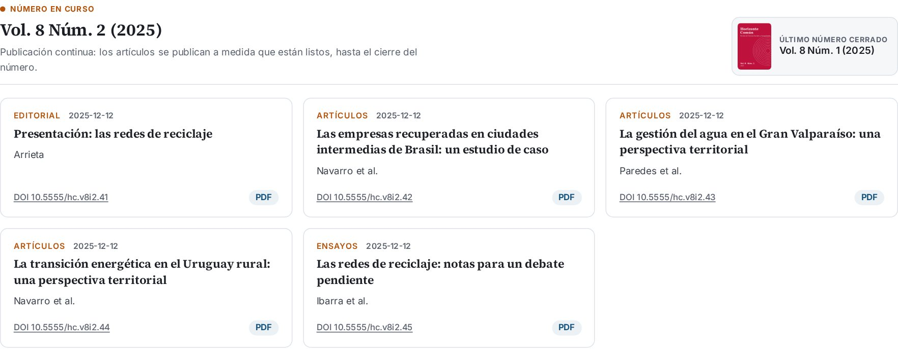
Pengumuman
Pengumuman di beranda ditampilkan dalam kartu. Secara opsional, pengumuman terbaru juga muncul di bilah di atas kepala halaman, yang dapat ditutup pembaca.
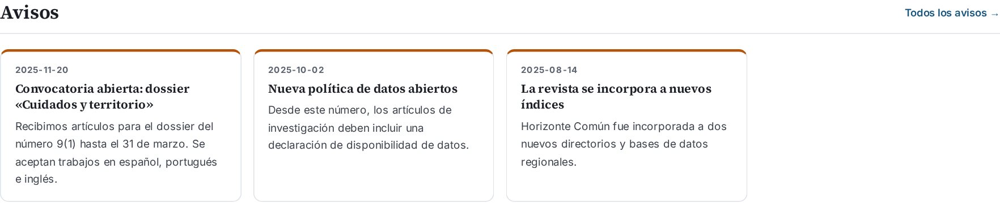
Halaman artikel
Kepala dengan bagian, akses terbuka, lisensi, dan terbitan; penulis dengan ORCID dan afiliasi; tanggal dan DOI. Unduhan dan “Cara mengutip” muncul sekali, di atas. Di kiri, daftar isi artikel; di kanan, metrik dan artikel terkait yang menyertai pembacaan.
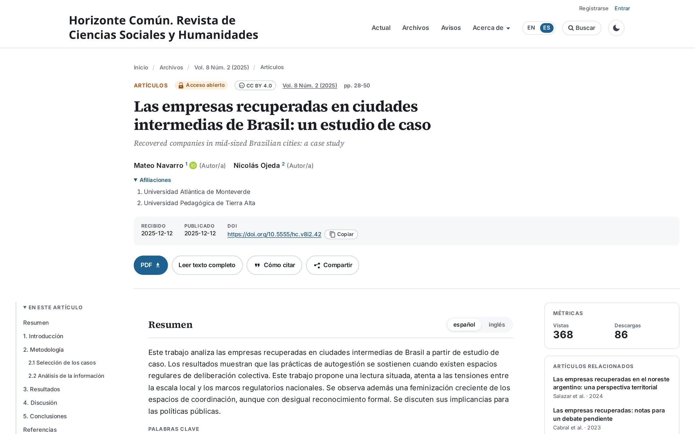
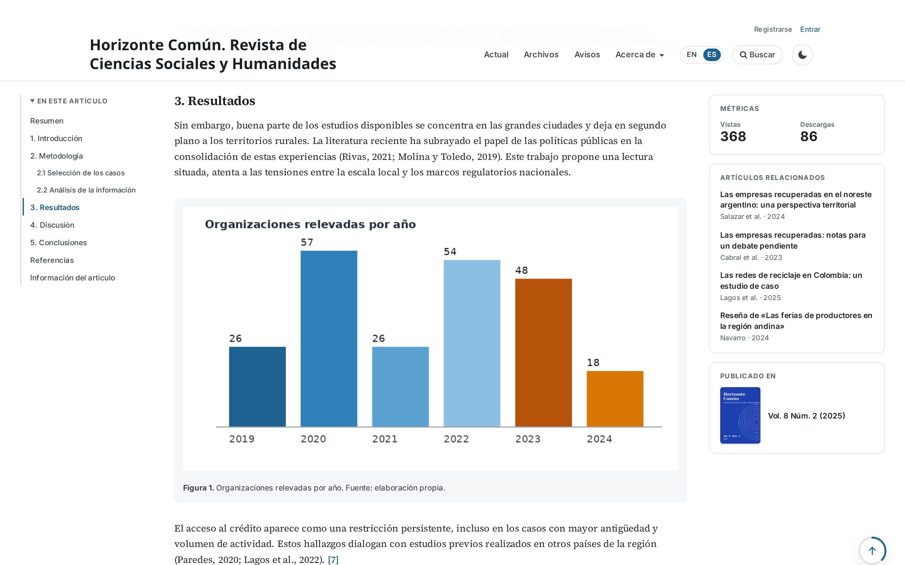
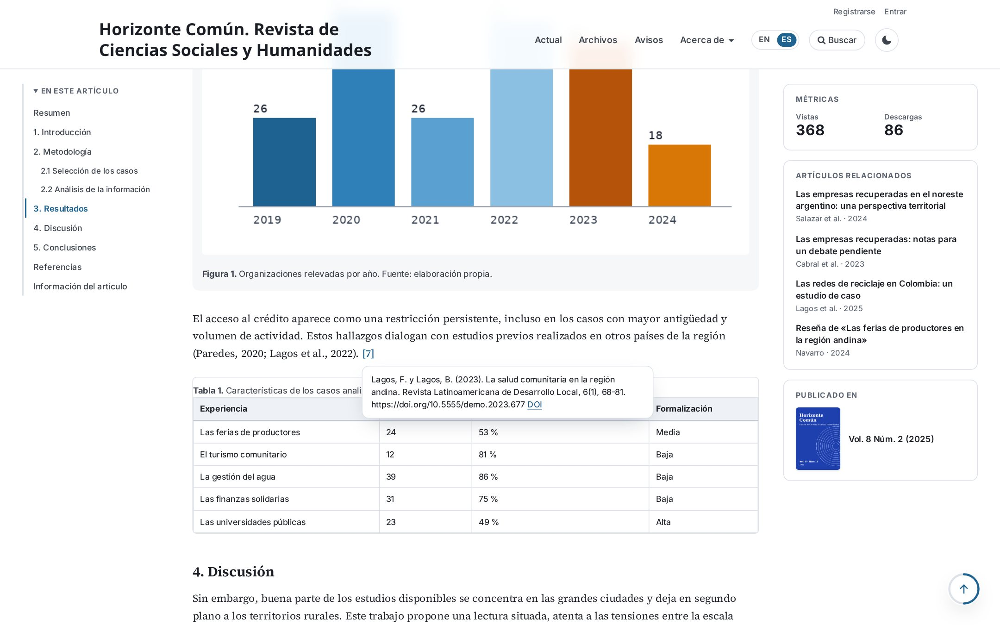
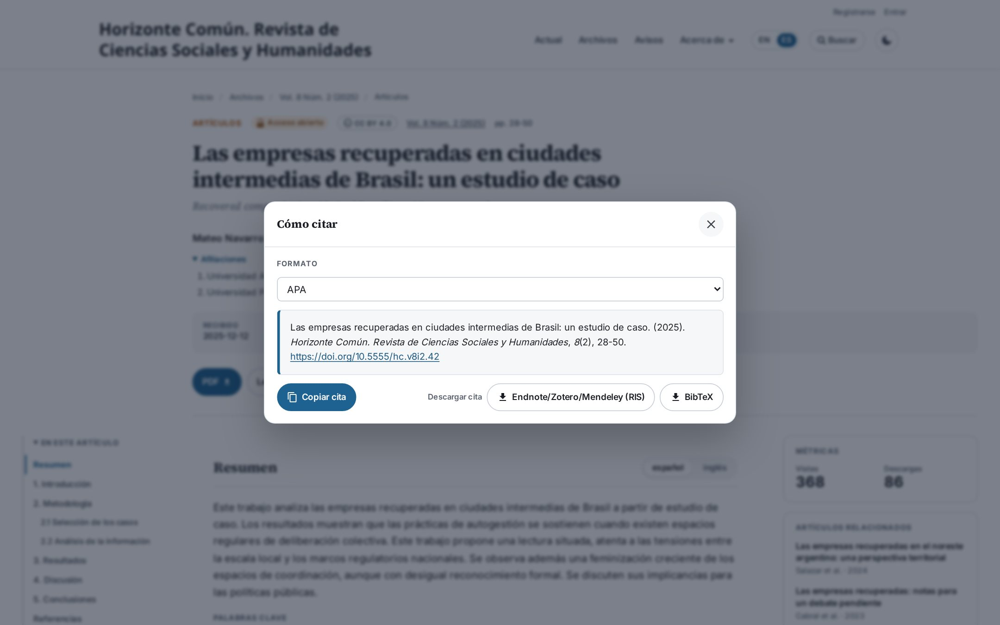
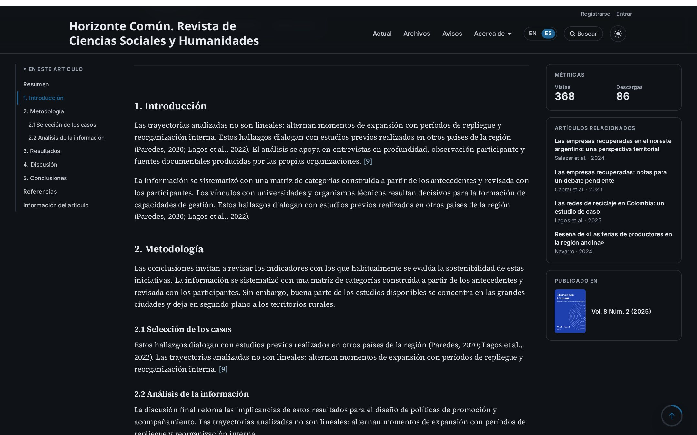
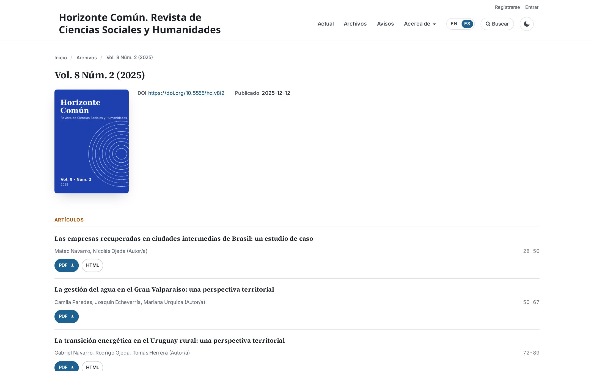
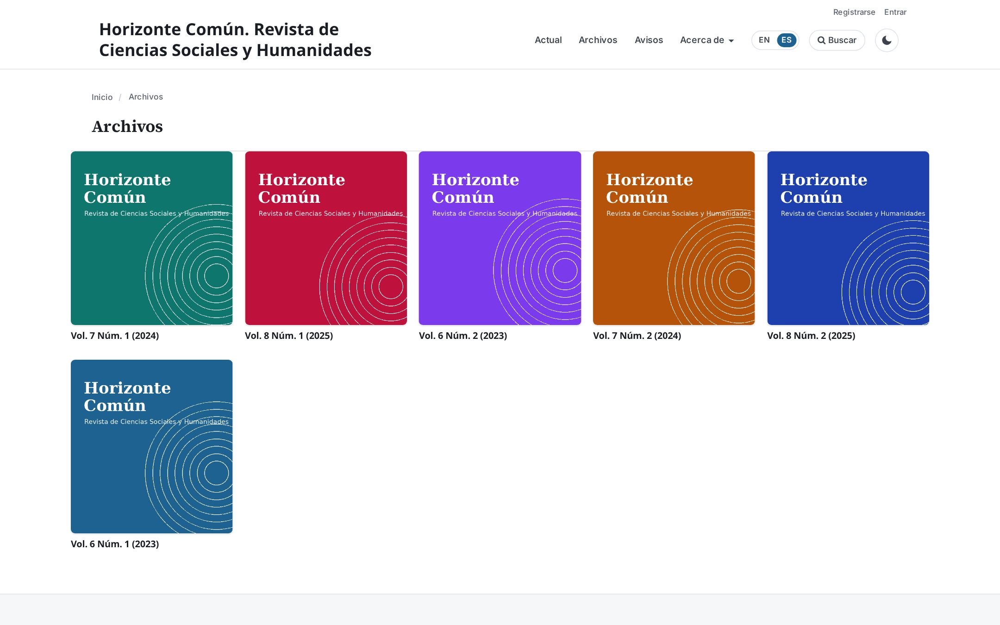
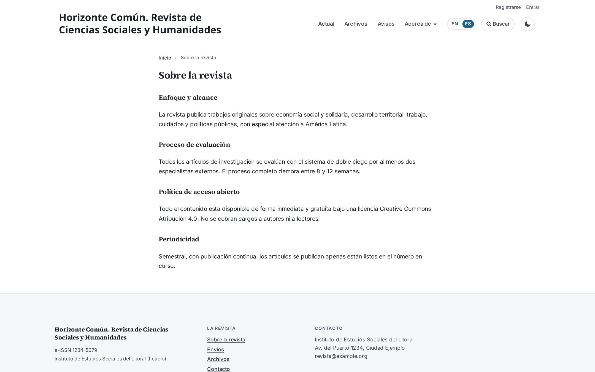
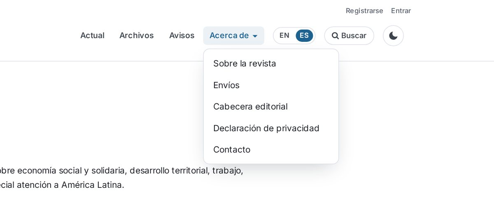
Kaki halaman dan cookie
Kaki halaman dibagi menjadi kolom dari konten yang sudah diisi editor di OJS: setiap garis horizontal membuka kolom baru. Blok pengindeksan dapat ditempatkan di sini, di setiap halaman.
Pemberitahuan cookie bersifat opsional, menautkan ke pernyataan privasi jurnal, dan teksnya dapat diubah untuk setiap bahasa.
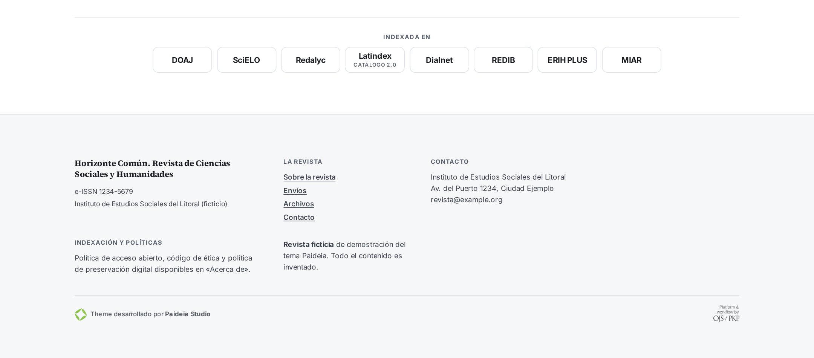
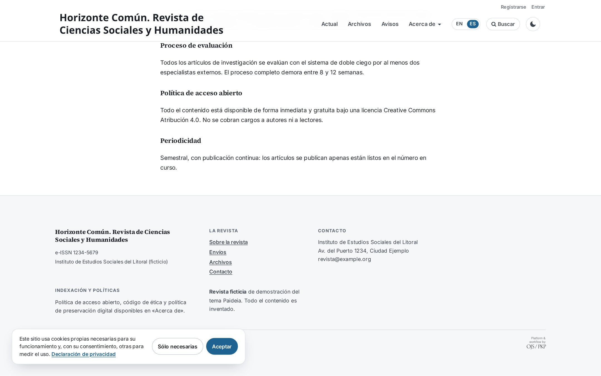
Seluler
Kepala halaman ringkas, menu tarik-turun, dan bacaan nyaman di layar kecil.
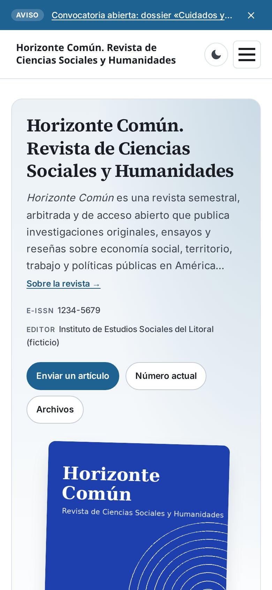
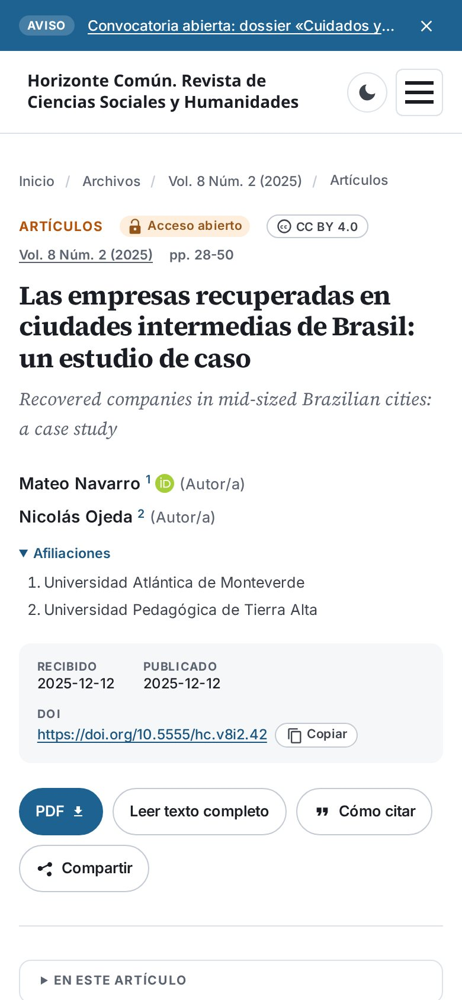
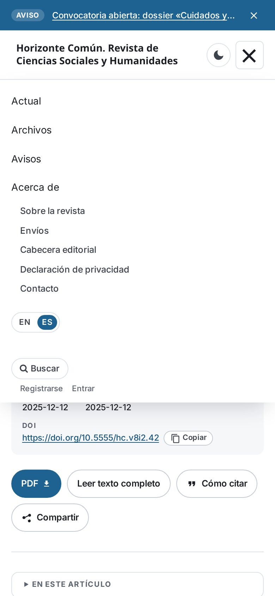
Pertanyaan umum
Sebelum memasang
Apakah gratis?
Ya. Tema ini adalah perangkat lunak bebas (GPL v3). Lisensi hanya meminta agar kredit “Tema dikembangkan oleh Paideia Studio” tetap terlihat di kaki halaman. Jika disembunyikan, tema menonaktifkan dirinya di peramban. Paket dukungan tahunan bersifat opsional.
Apakah berfungsi dengan versi OJS saya?
Dengan OJS 3.4 dan 3.5. Memerlukan PHP 8.0 atau lebih baru (8.2 untuk OJS 3.5). Tidak berfungsi dengan OJS 3.3.
Apakah pengaturan saya akan hilang?
Tidak. Tema memakai kaki halaman, menu, blok, dan pengumuman yang sudah ada di OJS. Jika kembali ke tema Default, semuanya tetap di tempatnya.
Apakah saya memerlukan galai HTML?
Tidak. Tanpa galai HTML, halaman artikel menampilkan abstrak, referensi, dan tombol PDF. Dengan galai HTML, teks lengkap dibaca di dalam halaman.
Sebaiknya memakai blok samping untuk logo pengindeks?
Sebaiknya tidak: tambahkan pengindeks di opsi tema. Blok samping memerlukan HTML dan gaya sendiri; blok “Terindeks di” milik tema tampil rapi tanpa kode.
Apakah pemberitahuan cookie memblokir Google Analytics?
Tidak memblokir skrip dengan sendirinya. Pemberitahuan menyimpan pilihan pembaca dan memicu peristiwa pdt:cookies, sehingga analitik atau layanan lain dapat menunggu persetujuan.
Apakah mengirim data ke pihak ketiga?
Font bersifat lokal dan tidak ada skrip pihak ketiga. Hanya jika diaktifkan: “Dikutip oleh” menghubungi OpenAlex dari server (hanya mengirim DOI) dan Crossmark memuat skrip Crossref.
Bagaimana mengatur kolom kaki halaman?
Kaki halaman ditulis di tempat biasa: Pengaturan → Situs Web → Tampilan → Pengaturan → Footer halaman. Editor tidak punya tombol garis horizontal, jadi buka kode sumber dengan tombol <> dan tulis <hr> di antara kolom. Contoh, tiga kolom:
<h4>Kontak</h4>
<p>Institut Contoh · jurnal@example.org</p>
<hr>
<h4>Kebijakan</h4>
<p>Akses terbuka, etika, dan preservasi.</p>
<hr>
<h4>Lisensi</h4>
<p>Konten di bawah CC BY 4.0.</p>Tanpa garis tetapi dengan dua judul atau lebih, setiap judul memulai kolom. Kolom berisi nama, ISSN, penerbit, dan tautan jurnal ditambahkan oleh tema (opsi tema “Footer”): tidak perlu diulang. “Kolom footer” menentukan jumlah kolom per baris; sisanya pindah ke baris berikutnya.
Dukungan
Paket dukungan tahunan
Tema ini gratis. Jika jurnal Anda memerlukan pendampingan, paket tahunan mencakup:
- Pemasangan pembaruan yang sudah diuji di OJS Anda.
- Bantuan untuk bug.
- Konsultasi pemasangan dan penggunaan.
Pertanyaan lain? Migrasi, galai HTML dan JATS, hosting, dan pembaruan terkelola.